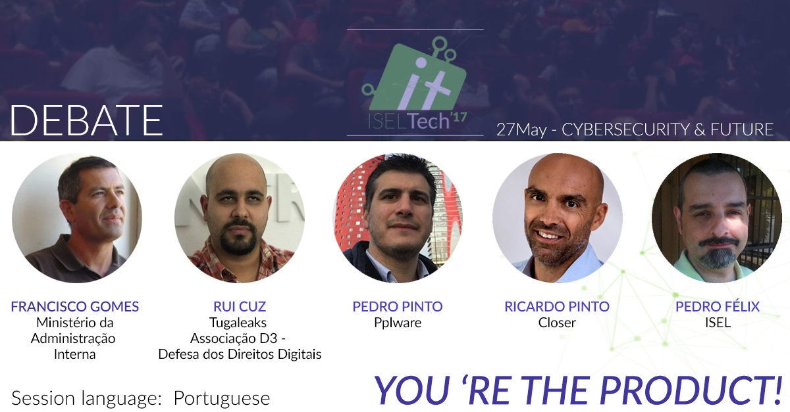

Debate: You're the product!
27 May - 5PM
NOTE: As this debate will be in Portuguese, this post is also written in the same language. Sorry. However, you can still attend several sessions!
27Maio - 17h - DEBATE - Cybersecurity - You're the product
Uma rede de wi-fi gratis que nos pede o número de telemóvel, um contrato assinado à distância de um click, uma simples configuração de e-mail que oferece um quase total controlo sobre o nosso dispositivo, uma lei que disponibiliza dados de trafego e localização das operadoras. Todos pequenas situações com as quais não fomos ensinados a lidar.Sem grande alarido, a tecnologia entrou em nós. Infiltrou-se, faz parte da nossa identidade - a internet é parte fundamental das relações interpessoais e o virtual já não é mais apenas um mundo anexo ao nosso — pertence ao íntimo da nossa realidade. Mas, quem nos protege? Quem nos guarda os guardas?
São milhares os negócios grátis que procuram um produto especifico: dados, o petróleo do século XXI. Nós somos o produto!
Com mais de 60% de população portuguesa com acesso à internet, a tecnologia evoluiu, mas a sociedade não a soube acompanhar. O cidadão já não é apenas um usuário, mas sim, cada vez mais, um produto. Procurando abordar temáticas como a produtização do ser humano e a vulnerabilidade da sua privacidade, bem como a ausência de informação e regulamentação, deixamos as questões: Quais os desafios emergentes da segurança na internet? Como educar as populações para tal?
Estes temas serão debatidos num debate, mediado por Pedro Pinto (Co-CEO do Pplware/ SYSAdmin do IPGuarda) com alguns dos maiores experts nacionais.
Rui Cruz - Fundador do Tugaleaks,Hackers Portugal e membro da Associação D3 - Defesa dos Direitos Digitais
Pedro Félix -Professor de segurança na internet no ISEL
Francisco Gomes - Secretário Geral Adjunto do Ministério da Adminstração Interna
Ricardo Pinto - DPO Information Security Manager @ Closer
